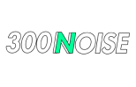

Quebrando o enigma presente na singularidade do que é experimentar e consumir cultura.

Quebrando o enigma presente na singularidade do que é experimentar e consumir cultura.
De 2014 para cá estamos constantemente trazendo eventos de fusão entre arte, cultura e expressão. Trabalhamos com mais de 50 artistas de diversas vertentes.
Opinião, expressão, criação, transformação. Somos vivos e ecoamos vozes.
Com profissionais de comunicação, ciências sociais, geografia, história e mergulhadores de dados, criamos um modelo de trabalho aprofundado e dinâmico que estuda sobretudo as convergências culturais.
Consultoria

Assessoria
de comunicação

Music branding

Produção de projetos

Estudos
comportamentais